A growing constellation of poetry, digital archaeology, language experiments, software, and research. Follow what is live, see what is evolving, and know when each trail was last documented.
Directory reconciled · Dates use US Eastern Time unless labeled otherwise.
Project directory
Find a thread.
The activity date describes exactly what was verified: a source change, deployment, or public check. A site check is not claimed to be a content update. This ledger is curated, not an automatic feed of private work.
Quick paths
40 projects ready to explore
No matching projects. Try another keyword or clear the filters.
Open to everyone
The lights that are on 10
Existing public destinations, verified independently or by their publication records. A public release is different from a source repository or private editor.
ResearchPublic
HYDRA//INDEX
An evidence-conscious reference for compounds, pharmacology, and sourced research. Its October 31 production release expands journal coverage and adds responsible source-request pacing.
The restored early-Internet poetry community, with public conversations, surviving works, historical context, and connections to the wider project ecosystem.
The original literary map now also connects the wider public-safe project universe, with stage-aware discovery and distinct provenance for every destination.
An intentionally narrow public portfolio of methods, milestones, evidence discipline, and selected work. It is not a window into private life administration.
A publicly shared directory of Sanford meals, food assistance, local services and shared shopping or ride options. Check provider details before travel.
A public-audience Lovable project reconstructing early IDunnoPoetry forum history. Its standalone publication address has not been independently established.
Last recorded Lovable edit
No public app link
Works in progress
Still taking shape 23
Public-safe descriptions only. No links to private repositories, unpublished writing, source documents, or personal data.
Experimental languageIn development
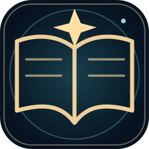
Forge Lexicon
Continual lexical invention and provenance work. The Observatory publishes a selected, reviewed portion; drafts and recent proposed terms are not automatically released.
A curated poetry manuscript undergoing print-production preflight; a dimension issue remains unresolved. No new retail edition has been published.
Private publishing preflight
No public app link
Book · In preparationIn development
THE WRECKAGE ARRANGED ME
A second poetry manuscript undergoing publication proofing, text fidelity and version verification.
Latest verified private proof work
No public app link
Editorial engineeringIn development
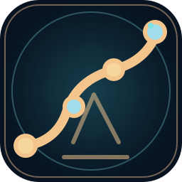
RhymeMosaic Corpus Auditor
Tools to compare recovered poetry witnesses, detect duplicates and truncation, and preserve editorial decisions without silent normalization.
Last recorded development
No public app link
Private editorial softwareIn development
RhymeMosaic Studio
Owner-side editorial and publishing workflows for selected canonical poetry, drafts and revisions. Not a public editing account.
Last recorded project review
No public app link
Capture and memoryIn development
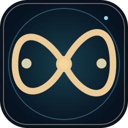
Total Recall · MindVault · EchoLens
Privacy-first capture, memory and retrieval experiments. A Total Recall Audio Workbench v0.1.0 package has been prepared; on-device testing remains unverified.
Private audio-workbench package reported
No public app link
User agencyIn development
Intent Integrity
Browser and Android-oriented experiments to reduce accidental actions and make consent deliberate. No native public release is claimed.
Last verified prototype checkpoint
No public app link
AI experimentationIn development
Lexidaimon · Local AI
Local assistant and OpenClaw integration experiments exploring a portable, user-controlled software collaborator.
Last reported local development
No public app link
Private AI archive and writing toolIn development
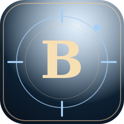
Mirror B · Brandon Mirror Private
Owner-only conversational, writing and archival assistant. Its personal source collection, correspondence, and identity-specific material are not public.
Latest independently documented private version
No public app link
Infrastructure · PlanningIn development
HYDRA hosting portability
A tested Render/Atlas migration proposal. The Railway production service remains the published site; no alternative paid hosting is presented as active.
Hosted migration tests passed; unmerged proposal
No public app link
Decision toolsIn development
Possibility Audit
A local, reversible experiment for documenting overlooked options and re-checking assumptions without pretending to predict outcomes.
Last verified offline acceptance
No public app link
Personal knowledge toolsIn development
ReadingOracle
A catalog and discovery interface for a privately maintained reading library. The underlying collection is not publicly exposed.
Last verified catalog review
No public app link
Writing and AI · Access controlledIn development
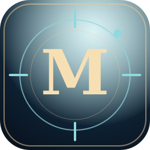
Brandon Mirror · Writing Studio
A separate writing-style and conversation studio concept using visitor-local inputs. Its historical public concept is not currently confirmed publicly accessible.
Access control checked; edit date unknown
No public app link
Patterns and research · PrivateIn development
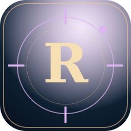
Resonance Atlas · Synchronicity
A private map for investigating coincidences and reported patterns, with a consent-based community concept; no personal event records are published.
Last documented private release review
No public app link
Social research · PrivateIn development
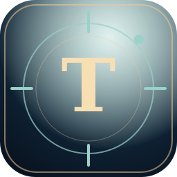
Threads Observatory
A private studio for reviewing Threads activity, themes, language experiments and proposed definition posts. Archive and analytics data stay private.
Last documented project update
No public app link
Context software · PrivateIn development
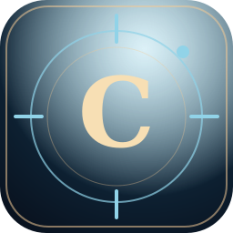
Continuity · Private ChatGPT Site
An owner-only hosted continuity experiment, distinct from the public Artificial Continuity GitHub Pages demonstration.
Last confirmed audience review
No public app link
Lexical software · PrivateIn development
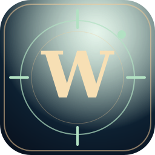
Word Archive
An unpublished word and language archive prototype. The reviewed public Lexical Observatory remains its separate reader-facing destination.
Last recorded Lovable edit
No public app link
Conversation archive · PrivateIn development
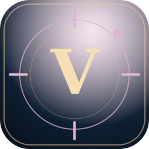
Victoria Archive
An owner-only conversational archival experiment. Historical private correspondence and personal source material are not public.
Last recorded Lovable edit
No public app link
Publishing tools · DevelopmentIn development
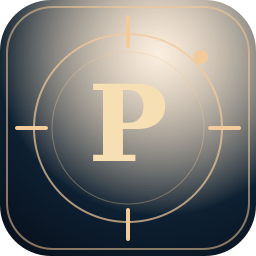
Publish Social
An unpublished social-content publishing prototype; no publicly available posting service is claimed.
Source project identifiedNot independently dated
No public app link
Analytics tools · DevelopmentIn development
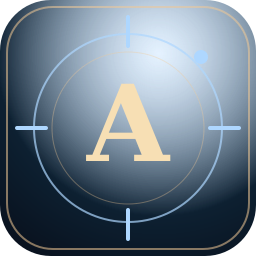
Threads Analytics
An unpublished analytics prototype for social-writing performance and content patterns; account-level data remains private.
Source project identifiedNot independently dated
No public app link
Research software · DevelopmentIn development
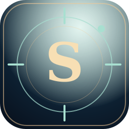
Substance Future
An unpublished research-tool prototype separate from the publicly running HYDRA//INDEX reference.
Source project identifiedNot independently dated
No public app link
Evidence research · Owner-onlyIn development
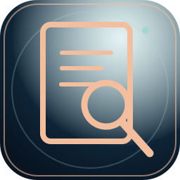
Public Deception Atlas
An evolving source-linked investigation of public claims, documented misrepresentation and counterevidence. Currently owner-only; case listings are not publicly released.
Owner-only site version recorded
No public app link
Software · Device prototypeIn development
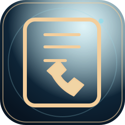
Callside · Call Notes
A lightweight floating call-notes and dialer workflow designed to reduce friction around calls. Source prototype exists; phone acceptance remains open.
Source prototype review
No public app link
Continuity of earlier work
Recovered and archived 5
Earlier publications and dormant prototypes are kept visible without pretending they were just updated.
Community software conceptsHistorical
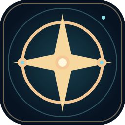
FavorExchange · KarmaSwap
Earlier reciprocal-help and mutual-aid interface concepts, preserved as research rather than advertised as a live service.
Historical source preservedNot reliably dated
No public app link
Creative automationHistorical
PosterPop
A historical social-publishing and content-planning prototype; no functioning public production service has been verified.
Last source review, not a release
No public app link
Early web archiveHistorical
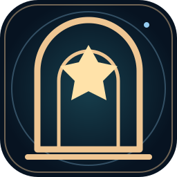
Original IDunnoPoetry
The historical precursor to the museum, with surviving WordPress material and Internet Archive snapshots.
Original early-web publicationHistorical; current update unknown